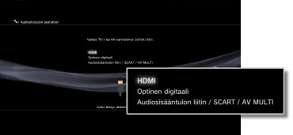
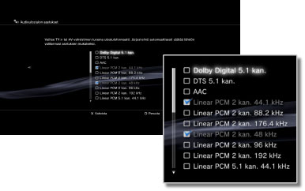
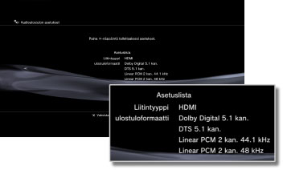

Asetukset > Ääniasetukset > Audioulostulon asetukset
Audioulostulon asetukset
Voit muuttaa järjestelmän äänilähdön asetuksia. Näitä asetuksia käytetään yleensä silloin, kun järjestelmään on kytketty digitaalista äänilähtöä tukevia äänilaitteita, kuten kotiteatterijärjestelmien AV-vahvistimet.
1. |
Vahvista muodot, joita äänilaitteesi tukee. |
|||||||||||||||||||||||
|---|---|---|---|---|---|---|---|---|---|---|---|---|---|---|---|---|---|---|---|---|---|---|---|---|
2. |
Valitse |
|||||||||||||||||||||||
3. |
Valitse [Audioulostulon asetukset]. |
|||||||||||||||||||||||
4. |
Valitse äänilaitteen tuloliitäntä. Tuetut kanavien numerot ja äänimuodot vaihtelevat käytössä olevan liitännän mukaan. 
|
|||||||||||||||||||||||
5. |
Valitse äänen lähtömuodot.  |
|||||||||||||||||||||||
6. |
Tarkista asetukset.  |
|||||||||||||||||||||||
7. |
Tallenna asetukset. |
|||||||||||||||||||||||

 -painiketta.
-painiketta.Vihjeitä
- [Linear PCM 2 kan.] -äänen ulostulo on määritetty oletusarvoisesti kaikkiin lähtöliitäntöihin. Jos muutat äänen ulostulon asetuksia, ääni kuuluu vain määritetyistä liitännöistä.
- Jos muutat äänen ulostuloasetuksia, järjestelmä ei enää voi lähettää ääntä samaan aikaan monesta lähtöliitännästä. Jos esimerkiksi järjestelmä on liitetty televisioon HDMI-kaapelilla ja äänilaitteeseen optisella digitaalikaapelilla ja valitset [Audioulostulon asetukset] -kohdassa [Optinen digitaali], ääntä ei lähetetä enää television kautta. Jos haluat lähettää ääntä television kautta, valitse asetukseksi [HDMI] tai valitse
 (Asetukset) >
(Asetukset) >  (Ääniasetukset) > [Äänen moniulostulo] ja määritä asetukseksi [Päällä].
(Ääniasetukset) > [Äänen moniulostulo] ja määritä asetukseksi [Päällä]. - Jos vaiheessa 5 valitaan [Linear PCM 2 kan. 88,2 kHz] tai [Linear PCM 2 kan. 176,4 kHz], ääni voi katkeilla tai se ei kuulu joistakin äänilaitteista.
- Käytettäessä HDMI-kaapelia vain [Linear PCM 2 kan.] -ääni toistetaan PlayStation®2- ja PlayStation®-muotoisista ohjelmista. Dolby Digital- tai DTS-äänen toistaminen edellyttää, että PS3™-järjestelmä ja äänilaite yhdistetään optisella digitaalikaapelilla ja että [Audioulostulon asetukset] -kohdasta valitaan [Optinen digitaali].
- Jos järjestelmään liitetään HDMI-kaapelilla laite, joka ei ole yhteensopiva HDCP (High-bandwidth Digital Content Protection) -standardin kanssa, järjestelmällä ei voi toistaa videota ja/tai ääntä.
Huomautukset
- Jotkin PlayStation®2- ja PlayStation®-muotoiset ohjelmistot voivat käyttäytyä eri tavoin PS3™-järjestelmässä kuin PlayStation®2- tai PlayStation®-järjestelmissä, ja ne eivät ehkä toimi PS3™-järjestelmässä oikein.
- PlayStation®2-muotoisia ohjelmistoja ei myöskään voi käyttää joissakin PS3™-järjestelmissä. Lisätietoja on kohdassa [Toistettavat levytyypit], oman alueesi SCE-verkkosivustossa ja PS3™-järjestelmän mukana toimitetuissa asiakirjoissa.